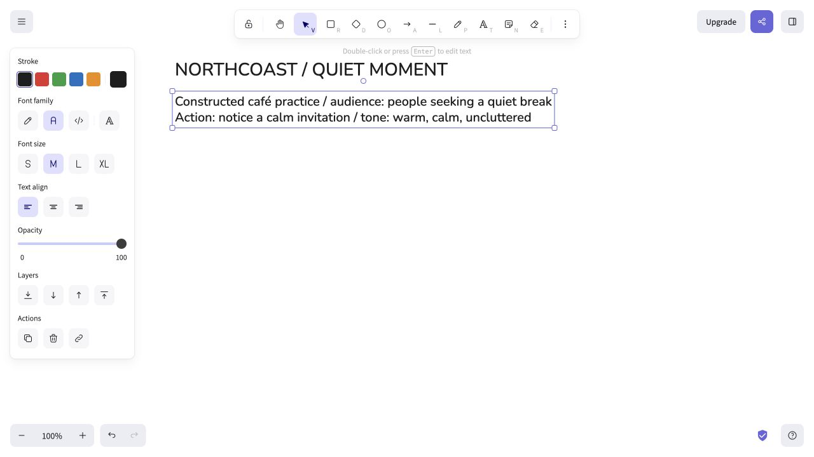
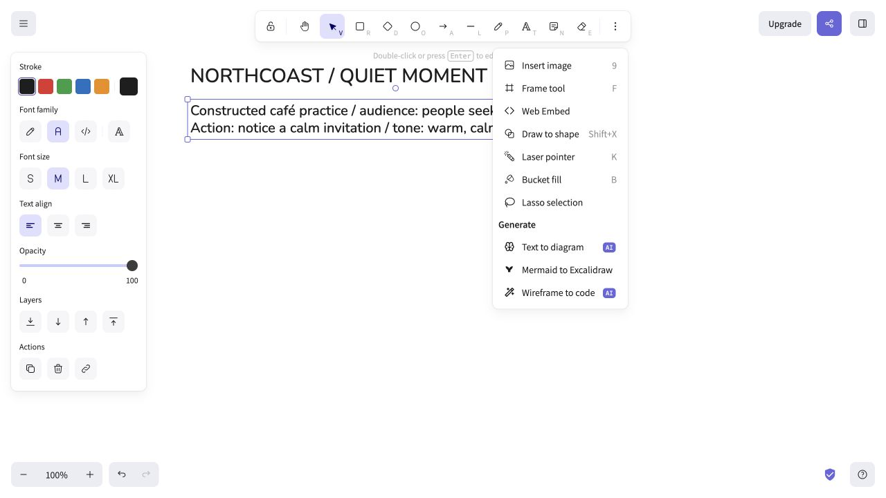
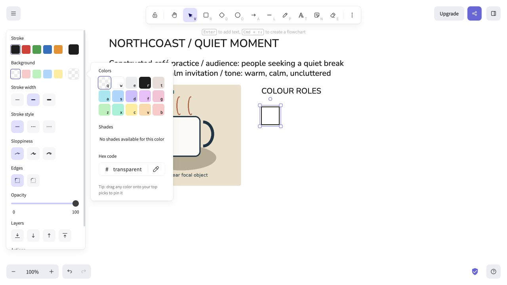
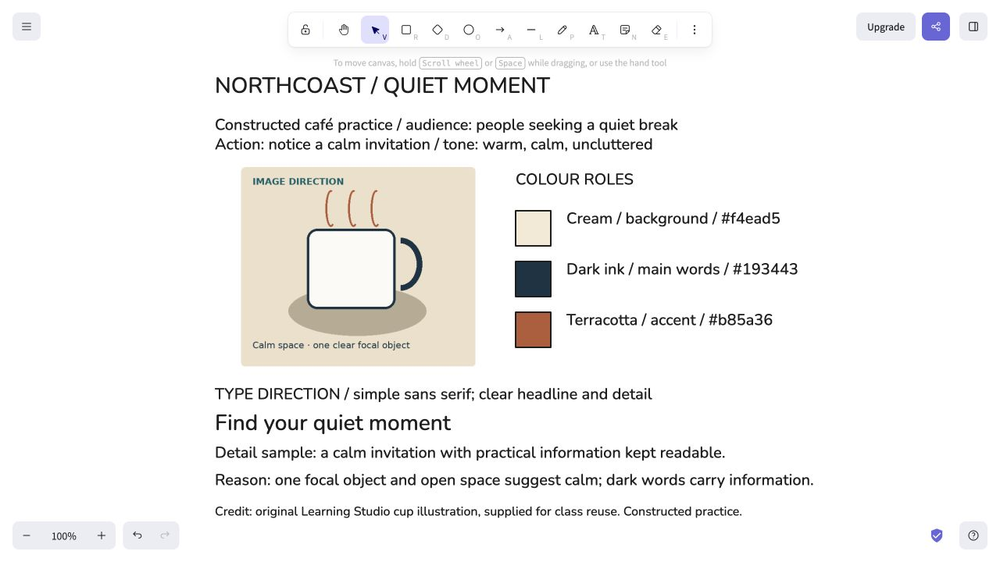
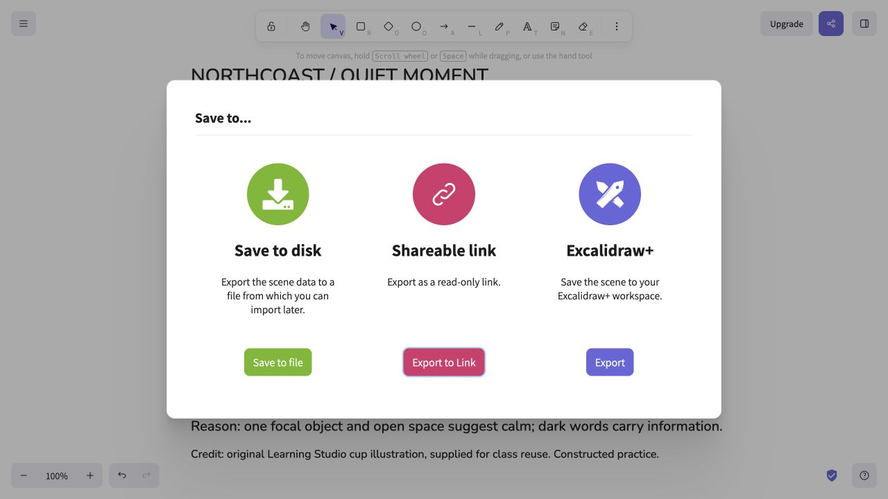
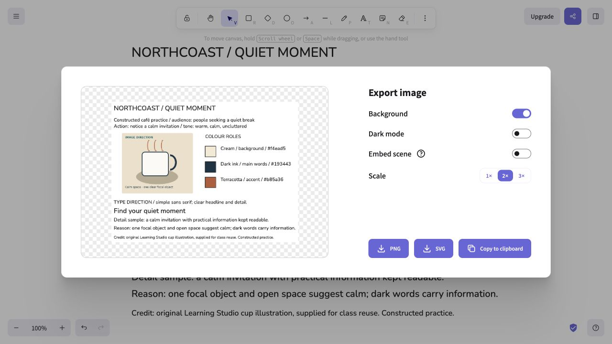
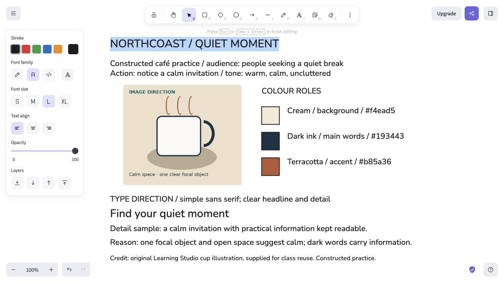

MULTIMEDIA 12 · SPRINT 4 · CLASSROOM EDITION · 9 OCTOBER 2026
Plan with a mood board
Free browser planning option: no installation. The steps below use genuine Excalidraw captures from the earlier planning demonstration. The sample supports learning the planning method; your assessed poster needs its own event message and alternatives.
1. Set the communication problem
Write a one-sentence brief and specific audience before collecting pictures. A mood board helps align colour, imagery and type with that direction; a thumbnail tests a composition. The captured worked example is an original café practice model reused from an earlier lesson, not an assessed event-poster answer.

Genuine earlier software capture; school network and device availability still need checking.
2. Add a permitted reference
Open Excalidraw in the browser. Choose the image tool and select a permitted local reference; position it on the canvas. Add maker/link and a sentence explaining what you are studying. Keep copyrighted study references distinct from assets you may use in production.

Genuine earlier software capture; school network and device availability still need checking.
3. Add colour samples and roles
Use the rectangle tool to make a sample. Select its background fill and enter your HEX colour. Repeat for five roles: dominant, supporting, accent, background and text. Label each with its value and reason; test actual text/background readability. The captured café sample is a method example with different colours from the arts-showcase sample.

Genuine earlier software capture; school network and device availability still need checking.
4. Establish type and composition direction
Use the text tool to add a title-role and detail-role example. Add a reason for each reference or treatment. Then sketch three composition alternatives alongside the board; changing a layout is a different decision from changing only a colour.

Genuine earlier software capture; school network and device availability still need checking.
5. Save an editable scene
Open the menu and choose Save to disk to create an .excalidraw scene. This is the editable planning file. Browser or school-download restrictions may change the save dialog; use the teacher-approved school folder and verify the saved file.

Genuine earlier software capture; school network and device availability still need checking.
6. Export a viewing image
Choose Export image and inspect the preview. Save a PNG for the viewer/teacher; it is not a replacement for the editable scene. If you include embedded scene data, also retain the separate .excalidraw file.

Genuine earlier software capture; school network and device availability still need checking.
7. Reopen and check
Open the saved scene through the Excalidraw menu, then select and edit one label. Check references, colour values and reasons. If a picture is missing, reconnect the permitted asset before handing off. The genuine earlier capture shows a restored, editable practice scene; this is not a school-device test.

Genuine earlier software capture; school network and device availability still need checking.
Move into Photoshop
Use the plan to build the chosen composition. A mood board is a direction reference; the production canvas/artboard contains the poster. Adobe documents the Artboard tool grouped with Move. Set and inspect the selected board’s actual dimensions in Properties, name it, then check layer grouping. This build has not verified that complete route in the school version; a single correctly sized canvas remains the required-product fallback.
Adobe’s current artboard instructions
Download the sample palette CSS · View labelled samples. Adobe documents Swatches import for CSS/HTML/SVG; native import has not been tested here. Manual foreground HEX → New Swatch is the documented fallback; add named colours without replacing existing collections.